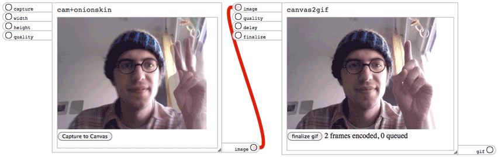

Meemoo are small creatures, furry or scaly, that live in the walls. Have you heard them scratching? At night they look for cupcakes in the kitchen. Lately they have been modding them....
A Meemoo composition is a graph of modules and the wires that connect them.
Modules are HTML pages that can live anywhere online, using any web technology.
Wires represent how the modules send messages to each other.

Demo: webcam → animated GIF
Meemoo takes some inspiration from Quartz Composer, Reason, Pure Data and AudioTool. But Meemoo is 100% of the web. It will be a tool for creative collaboration, to tie together smaller web demos into more complex compositions. "View Source" taught me to program, and will be central to Meemoo.
Compositions will be sharable on a community site. All compositions and modules will be forkable in the open source spirit of creative collaboration.
One composition will allow web video to be remixed with modules familiar to people who create digital music: patterns and pattern sequencers. Another person might take the video player out of this composition, and replace it with a JavaScript AudioAPI synth. Another might add a music visualizer written in Processing.js.
I am a strong believer in the idea that everything is a remix. Sampling, mashup music, and open source software are obvious examples, but I would argue that all science, language, and culture combines, evolves, and builds on the creations and discoveries of the past.
This is Forrest Oliphant's MA thesis project

Meemoo is a Mozilla WebFWD fellow project.

This app is free software (AGPL) and the source is available on GitHub.
Meemoo wildlife illustration by Jyri Pieniniemi.
Support development with: